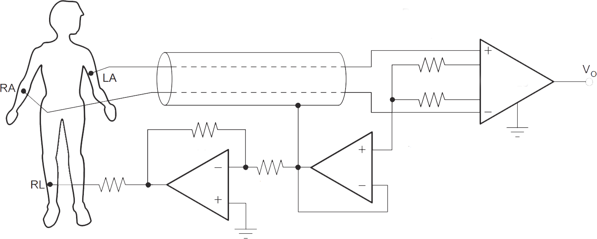
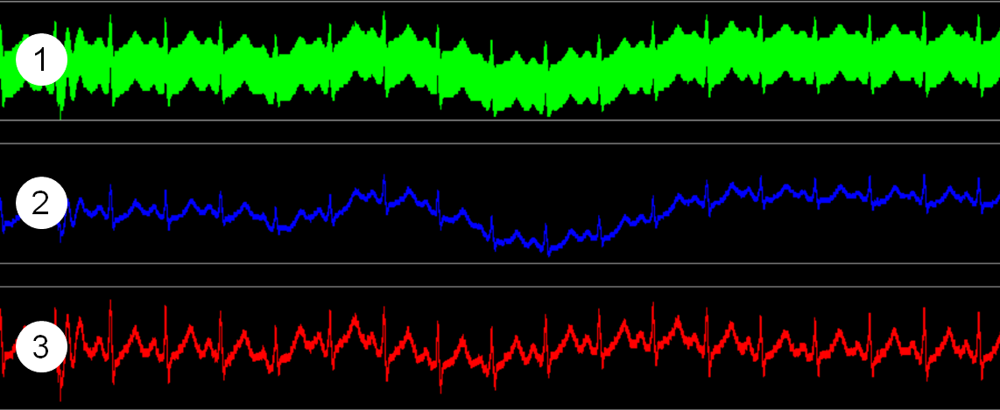
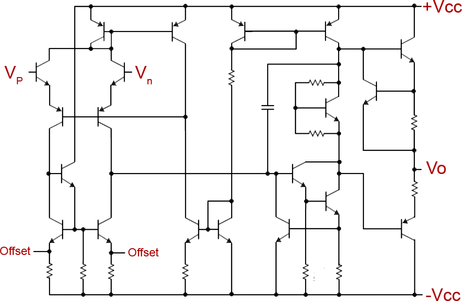
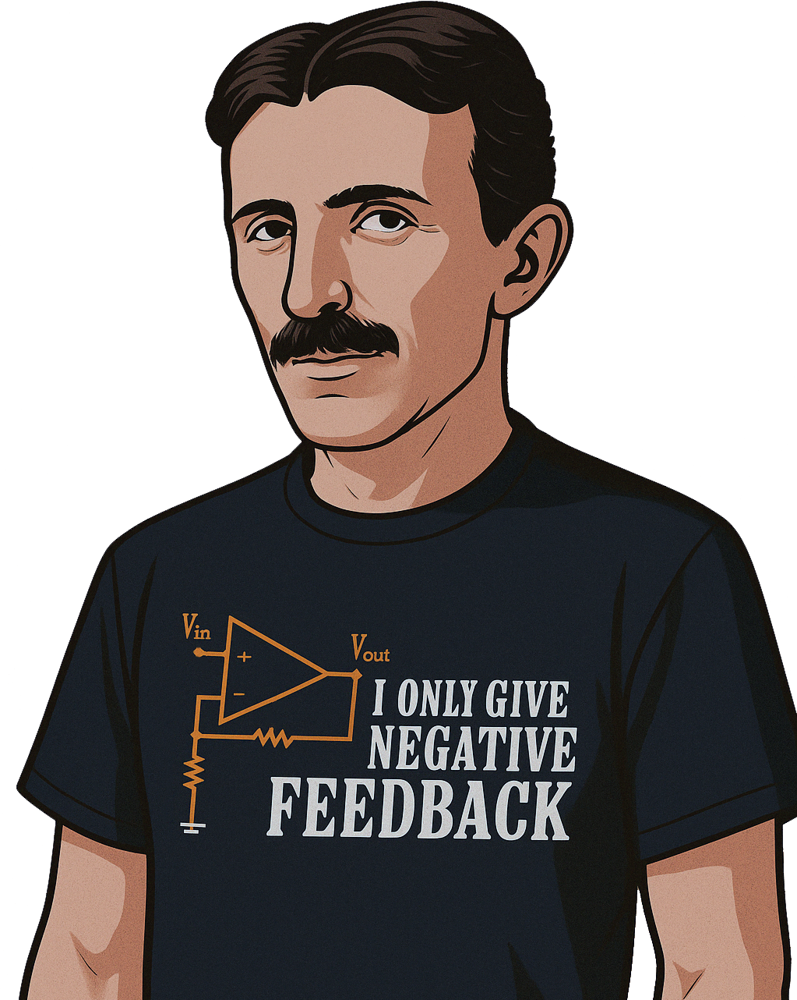

Amplificadores Operacionais
Introdução
Prof. Henrique Amorim - UNIFESP - ICT - Engenharia Biomédica
Amplificadores Operacionais - Definição
Definição: O amplificador operacional (AmpOp) é um dispositivo eletrônico composto por múltiplos estágios de amplificação, projetado para oferecer alto ganho, elevada impedância de entrada e operação com entrada diferencial.
Origem do nome:
- Amplificador: Baseado em circuitos amplificadores utilizando transistores, sua principal função é amplificar sinais elétricos.
- Operacional: Foi originalmente concebido para realizar operações matemáticas analógicas, como soma, subtração, multiplicação, divisão, média, logaritmo, exponencial, integração e derivação.
Principais características:
- Múltiplos estágios: Internamente, o AmpOp é constituído por uma cadeia de amplificadores em cascata, o que permite alcançar as demais características desejadas.
- Ganho elevado: Em malha aberta (sem realimentação), apresenta ganho de tensão extremamente alto, frequentemente superior a 10.000 vezes (ou 80 dB).
- Alta impedância de entrada: Possui uma impedância de entrada muito elevada, o que minimiza a corrente que flui dos sinais de entrada e evita carregamento da fonte.
- Entrada diferencial: A saída do amplificador é proporcional à diferença de potencial entre suas duas entradas (não inversora e inversora).
Amplificadores Operacionais - Aplicações
Amplificadores operacionais são amplamente usados na instrumentação biomédica, especialmente no registro de biopotenciais como o ECG. Nesse contexto, são aplicados na amplificação e filtragem de sinais de baixa amplitude gerados pela atividade elétrica do coração.

Referência: https://www.ti.com/lit/ds/symlink/ina128.pdf
Amplificadores Operacionais - Aplicações
São empregados na amplificação de variações mínimas de tensão, como as produzidas por strain gages em circuitos em ponte de Wheatstone.
Amplificadores Operacionais - Aplicações
Amplificadores operacionais são usados em sistema de controle i.e: controladores PID, os amplificadores são configurados para operações de multiplicação (proporcional), integração (integrativo) e derivada (derivativo)
Amplificadores Operacionais - Aplicações
Aplicação de amplificadores operacionais em filtros ativos: amplificação e controle da resposta em frequência.

1 - Sinal amplificado
2 - Após filtro passa baixas
3 - Após filtro passa altas
Amplificadores Operacionais - Anatomia/Simbologia
Estágios de amplificação (transistores)
Simbologia

Arquitetura do amplificador operacional 741
Referenciais
\(V_{p}\) - Entrada não inversora
\(V_{n}\) - Entrada inversora
\(+V_{cc}\) - Alimentação Positiva
\(-V_{cc}\) - Alimentação Negativa
\(V_{o}\) - Saída
Amplificadores Operacionais - Componente Eletrônico
Amplificadores Operacionais - Modelo Matemático
Amplificadores Operacionais - Comportamento
A tensão de saída não pode ultrapassar os limites \(+V_{cc}\) e \(-V_{cc}\)
\(V_{o}=A \cdot \left(V_{p}-V_{n}\right)\)
\(V_{p}-V_{n} = \dfrac{V_{o}}{A}\)
Desconsiderando a queda de tensão da impedância de saída
Malha aberta
Defina o ganho (A):
Equações:
\(V_{n}=V_{1}\)
\(V_{p}=V_{2}\)
\(V_{1}=5 \cdot cos(\omega t) V\)
\(V_{2}= 2V\)
Amplificadores Operacionais - Tabela Comparativa
TABELA COMPARATIVA |
|
| Amp. Op. Ideal | Amp. Op. 741 |
| \(R_{i} \rightarrow \infty \Omega\) | \(R_{i}=2M \Omega\) |
| \(R_{o} = 0 \Omega\) | \(R_{o}=75 \Omega\) |
| \(A \rightarrow \infty\) | \(A=10^{5}\) |
Comparação entre os parâmetros do modelo real do amplificador operacional 741 (um dos mais comuns no mercado) e os de um amplificador operacional ideal.
Adotaremos os parâmetros do amplificador operacional ideal para analisar seu funcionamento e principais aplicações.
Amplificadores Operacionais - Regiões de operação
Um amplificador operacional pode operar em duas regiões distintas: (1) região de saturação e (2) região de amplificação linear. Para que o dispositivo opere na região de amplificação linear, segundo o modelo ideal, é necessário que as tensões nos terminais de entrada inversora (\(V_{n}\)) e não inversora (\(V_{p}\)) sejam rigorosamente iguais, ou seja, \(V_{n}=V_{p}\).
No entanto, quando o amplificador operacional é utilizado em malha aberta (ou seja, sem realimentação), essa condição de equilíbrio entre as entradas se torna instável em dispositivos reais e, consequentemente, inviável para aplicações práticas. Nessa configuração, qualquer diferença, por menor que seja, entre \(V_{p}\) e \(V_{n}\) será amplificada de forma significativa, fazendo com que a tensão de saída (\(V_{o}\)) atinja rapidamente um dos níveis de saturação do circuito, isto é, \(+V_{cc}\) ou \(-V_{cc}\). Como visto na simulação em malha aberta
A configuração em Malha Aberta é empregada quando o objetivo é comparar as tensões aplicadas às entradas inversora e não inversora do amplificador operacional. Por essa razão, o dispositivo recebe a denominação de Comparador de Tensão.
Para que possamos explorar os diferentes comportamentos operacionais — em especial os de natureza aritmética — do amplificador operacional ideal, é necessário adotar uma configuração com retroalimentação (majoritariamente negativa) e assumir como premissa que o dispositivo opera na região de amplificação linear.
Amplificadores Operacionais - Primeira restrição
Considerando que a impedância de entrada de um amplificador operacional é elevada, a corrente que flui para seus terminais de entrada é extremamente baixa. No modelo ideal, assume-se que a impedância de entrada tende ao infinito, o que implica que as correntes de entrada são nulas, ou seja, (\(I_{n}=I_{p}=0A\)).
\(R_{i} \rightarrow \infty \Omega\)
\(I_{n} = 0A; \quad I_{p} = 0A;\)
\(I_{n} = I_{p} = 0A\)
| Amp. Op. Ideal | Amp. Op. 741 |
| \(R_{i} \rightarrow \infty \Omega\) | \(R_{i}=2M \Omega\) |
Amplificadores Operacionais - Segunda restrição
No modelo ideal, o ganho de malha aberta tende ao infinito. Quando há realimentação negativa e o circuito opera na região linear, essa característica força a diferença de potencial entre os terminais de entrada a zero, de modo que \(V_{n} = V_{p}\).
\(A \rightarrow \infty \)
\(R_{o} = 0\Omega\)
\(V_{o}=A \cdot \left(V_{p}-V_{n}\right)\)
\(V_{p}-V_{n} = \dfrac{V_{o}}{A}\)
\(V_{n} = V_{p}\)
| Amp. Op. Ideal | Amp. Op. 741 |
| \(A \rightarrow \infty\) | \(A=10^{5}\) |
| \(R_{o} = 0 \Omega\) | \(R_{o}=75 \Omega\) |
Amplificadores Operacionais - Malha Fechada
Para que o amplificador operacional opere linearmente e de forma controlada, é necessário considerar uma realimentação na entrada inversora. Também deveremos assumir as restrições citadas anteriormente:
\(I_{n} = I_{p} = 0A\)
\(V_{n} = V_{p}\)
Em aulas futuras, serão analisadas as implicações da realimentação na entrada não inversora.

Amplificador Operacional - Malha fechada - Exemplo
Exercício: Responda os itens abaixo
- Calcule \(\boldsymbol V_{o}\) de acordo com os valores de \(\boldsymbol V_{a}\) e \(\boldsymbol v_{b}\)
- Se \(\boldsymbol v_{a}=1.5V\), espeficique a faixa de \(\boldsymbol v_{b}\) que impeça a saturação do amplificador
* Resolução inutitiva
Parâmetros:
Amplificador Operacional - Malha fechada - Exemplo
Etapa 1
Considerar as resitrições
Amplificador Operacional - Malha fechada
Amplificadores Operacionais - Configurações Básicas
Amplificadores Operacionais - DAC
Exercício: Responda os itens abaixo
\(V_{1}\)
\(V_{2}\)
\(V_{3}\)
\(V_{4}\)
Amplificadores Operacionais - Strain Gage
Exercício: Calcule o valor de \(V_{o}\)
Simulação: https://everycircuit.com/circuit/6101932397690880
Amplificadores Operacionais - Strain Gage
Faixa de \(V_{o}\) : [ : ]